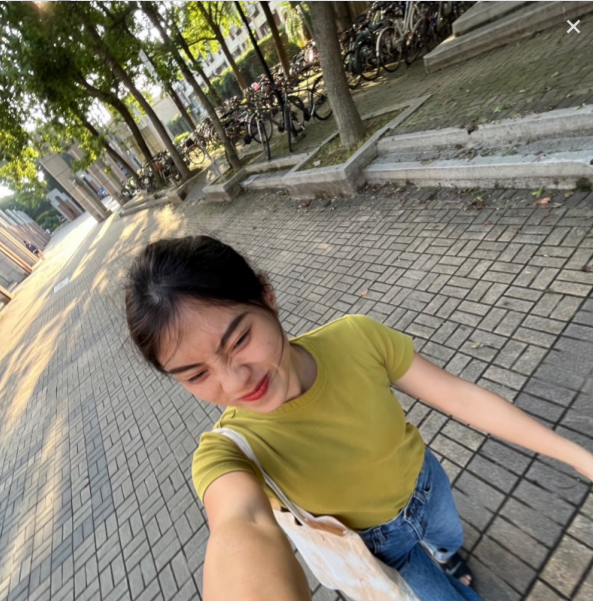
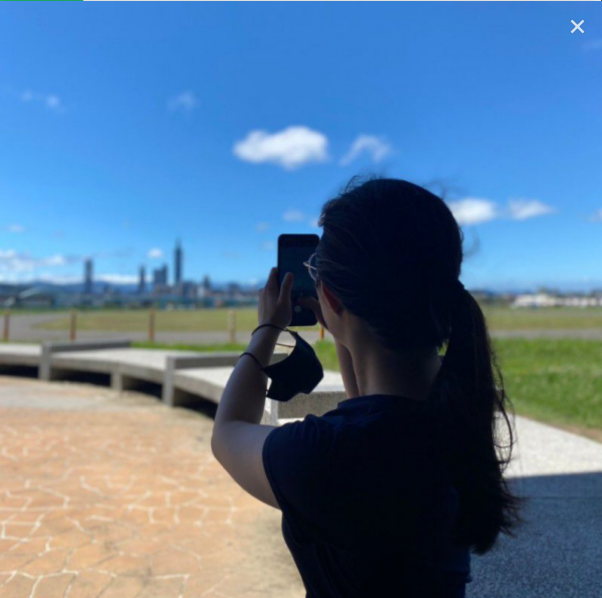

捷運資訊網
捷運站查詢
夜市地圖
觀光景點地圖
戶外休閒地圖
團隊成員介紹
捷運站網站
捷運站
▼
虎山親山步道
國父紀念館
西門紅樓
艋舺龍山寺
象山親山步道
二二八和平紀念公園
寧夏夜市
士林夜市
紅毛城
饒河街觀光夜市
中正紀念堂
台灣大學
景美夜市
大稻埕
行天宮
樂華夜市
金面山親山步道
指南宮貓空親山步道
737夜市
夜市
路線導航:
×
觀光景點
路線導航:
×
戶外休閒
路線導航:
×
團隊成員
Bunnie

Bunnie
Linda

Linda